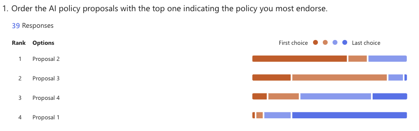
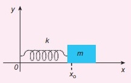

Day 06 - Making Classical Models#

Plane Polar Coordinates Warm-Up#
We introduced plane polar coordinates (\(r,\phi\)). For any position vector, \(\vec{R}\), we can write:
where \(r\) is the magnitude of \(\vec{R}\), and \(\hat{r}\) is the radial unit vector.
Find \(\dot{\vec{R}} = \frac{d\vec{R}}{dt}\). Get as far as you can. Our answer will be in terms of \(\hat{r}\) and \(\hat{\phi}\).
Remember the chain rule and Cartesian unit vectors are fixed in space/time
\(\hat{r} = \cos(\phi)\hat{x} + \sin(\phi)\hat{y} \qquad \hat{\phi} = -\sin(\phi)\hat{x} + \cos(\phi)\hat{y}\) \(\frac{d}{d\phi} \cos \phi = -\sin \phi \qquad \frac{d}{d\phi} \sin \phi = \cos \phi\)
Day 06 - Making Classical Models#
Announcements#
Homework 2 is due Friday
Video recordings have continued to fail.
Zoom password: phy321
Updated office hours (Danny-DC; Elisha-EA):
Monday 4-5pm (DC)
Tuesday 5-6pm (EA)
Wednesday 4-5pm (DC)
Thursday 5-6pm (EA)
Friday 10-12pm (DC then EA); 3-4pm (DC)
Seminars this week#
MONDAY, January 27, 2025
Condensed Matter Seminar 4:10 pm,1400 BPS, Luca Delacretaz, University of Chicago, Precision tests of thermalization and Planckian bound from hydrodynamic EFT
CAPS Connect – Abigail (Abby) Weller BPS 1312C - Starts back up today
30 minute Walk-ins are available or to schedule a meeting: https://caps.msu.edu/services/CAPSConnect.html
Seminars this week#
WEDNESDAY, January 29, 2025
Astronomy Seminar, 1:30 pm, 1400 BPS, Michiel Lambrechts, Univ. of Copenhagen, Planet formation
FRIB Nuclear Science Seminar, 3:30pm., FRIB 1300 Auditorium, Brenden Longfellow of Lawrence Livermore National Laboratory, From Tensor Current Limits to Solar Neutrinos: 8Li and 8B Studies with the Beta-decay Paul Trap
AI Policy Proposals#
Proposal 1: We adopt a policy that does not allow AI use at all.
Proposal 2: We adopt a policy that allows AI use for brainstorming, help, and editing.
Proposal 3: We adopt a policy that allows AI for use in nearly any way.
Proposal 4: We adopt a policy that allows AI for use in any way with no documentation required.
Updated AI Policy#
We have elected to use Proposal 2 for the AI Policy.
Proposal 2: 61.5% first choice; 12.8% second choice
Proposal 1: 26.5% first choice; 61.5% second choice
Proposal 3: 46.2% third choice; 23.1% last choice
Proposal 4: 17.9% third choice; 74.4% last choice

AI Policy going forward#
To be posted on D2L and in the syllabus#
We have adopted a policy that allows AI use for brainstorming, help, and editing.
We will not use AI tools for direct answers or the completion of assignments.
We expect documentation of AI use, but it can be informal. The documentation should at least contain the AI tool used, the prompts given, and the responses received.
Policy violations are discussed with Danny; the first violation requires a redo of the assignment, and repeated violations result in a failing grade.
We will review an amendment to this policy if 1/3 of the class prepares one.
Goals for Week 3#
Be able to answer the following questions.
What is Mathematical Modeling?
What is the process for analyzing these models?
Be able to solve “Simple” Motion Problems with Newton’s Laws.
Modeling Video#

What is your experience with modeling?#
Take 2-3 min to think about your prior physics classes#
What models have you used? What makes that a model?
What made a that model good or not so good?
What kinds of things could you do to make a better model?
Vortex Shedding#
At higher Reynolds numbers, flow around objects becomes unstable.
This instability can lead to the formation of vortices.
This “shedding” of vortices can lead to vibrations and noise.
Model of vortex shedding behind a cylinder#
Controlling vortex shedding is important in many engineering applications.

Giosan, Ioan, and P. Eng. "Vortex shedding induced loads on free standing structures" Structural Vortex Shedding Response Estimation Methodology and Finite Element Simulation 42 (2013).
Renewables: Wind Turbines#
Thorntonbank Wind Farm#
North Sea off the coast of Belgium#
Notice the cylindrical shape of the support structure.

Clicker Question 6-1#
The SHO is a useful model: \(m\ddot{x} = -kx\).
Assume the restoring force is anti-symmetric about the equilibrium position, what is the next term model?
\(\sim x^2\)
\(\sim x^3\)
\(\sim x^4\)
\(\sim x^5\)

Clicker Question 6-2#
Assuming a linear model for Air Resistance \(\sim bv\), we obtained this EOM for a falling ball:
What happens when \(\ddot{y} = 0\)?
The ball stops moving (\(v = 0\)).
The ball reaches a velocity of \(mg/b\).
The ball reaches a terminal velocity.
I’m not sure.
Clicker Question 6-3#
For the system of Linear Drag in 1D, we found a solution for the velocity as a function of time, with \(v = 0\) at \(t = 0\). $\(v(t) = v_{term}\left(1-e^{-\dfrac{bt}{m}}\right)\)$
where \(v_{term} = \sqrt{\frac{mg}{b}}\).

CQ 6-3#
Which sketch could be correct for the velocity of the ball?
Clicker Question 6-4#
For the system of Quadratic Drag in 1D, we found a solution for the velocity as a function of time, with \(v = 0\) at \(t = 0\).
where \(v_{term} = (mg/c)^{1/2}\). Do the units make sense? What are the units of \(\left[gt/v_{term}\right]\)?
Yes, the units for \(\left[gt/v_{term}\right]\) are \(m/s\);both sides have the same units.
No, the units for \(\left[gt/v_{term}\right]\) are m/s; each side has different units.
Yes, the units for \(\left[gt/v_{term}\right]\) are unit-less; both sides have the same units.
No, the units for \(\left[gt/v_{term}\right]\) are unit-less; each side has the different units.
Clicker Question 6-5#
For the system of Quadratic Drag in 1D, we found a solution for the velocity as a function of time, with \(v = 0\) at \(t = 0\).
where \(v_{term} = \sqrt{mg/c}\). What happens when \(t \rightarrow \infty\)?
The object stops moving.
The object travels at a constant velocity.
The object travels at an increasing velocity.
The object travels at a decreasing velocity.
I’m not sure.